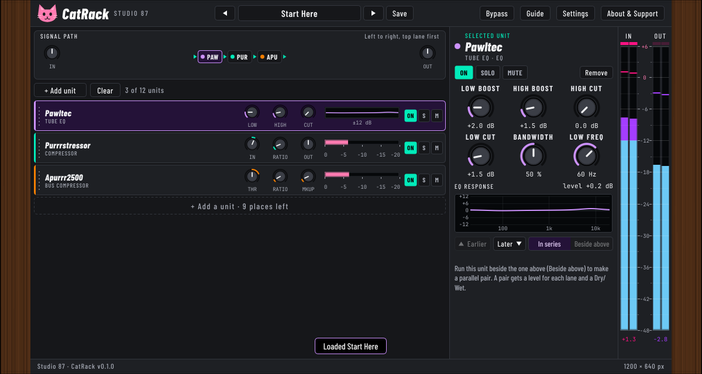

CatRack
A free, open source, cat-themed rack plugin (VST3): up to 12 effect units in one window, with parallel pairs, presets and dB meters.

Design mockup
Open the interactive mockup the plugin window was ported from. More pictures of the real window: look A, look B, presets, add a unit.


Download
Test build v0.1.0 (pre-release) on the Releases page: installers for Windows, macOS and Linux plus the PDF manual in one zip. 20 of 31 planned units are built; see the roadmap.
Source
github.com/SpeakingColors/CatRack. AGPL-3.0-or-later. Collects nothing.